ภาพรวมบทนี้ L3 สอนวิธี "เก็บ" และ "เขียน" requirement บทนี้ต่อด้วย requirements analysis คือการเอา requirement มาวิเคราะห์และทำเป็น โมเดล โดยเริ่มจาก scenario-based model ที่ใช้บ่อยที่สุด คือ use case
เนื้อหาหลักมี 3 ส่วน: (1) การวิเคราะห์ requirement และโมเดลแบบต่าง ๆ (2) use case diagram ทั้งสัญลักษณ์ ความสัมพันธ์ (association, inheritance, include, extend) และขั้นตอนการวาด (3) use case narrative ที่อธิบายแต่ละ use case เป็นตาราง
ท้ายไฟล์มีแนวทางทำ แบบฝึกหัด In-class (Zoo Ticketing) และ Exercise 2 (คลินิกทันตกรรม / ร้าน POS คริสต์มาส) ที่ใช้เนื้อหาบทนี้
1. Requirements Analysis: สะพานสู่การออกแบบ
A Bridge
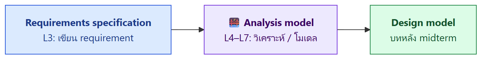
Analysis model เป็น "สะพาน" เชื่อมจาก requirement ที่เป็นข้อความ ไปสู่การออกแบบระบบ ถ้าไม่มีสะพานนี้ นักออกแบบต้องตีความข้อความเอง ซึ่งผิดพลาดง่าย
Requirements Analysis ทำอะไร
- ระบุลักษณะการทำงาน (operational characteristics) ของซอฟต์แวร์
- ขยายรายละเอียด requirement พื้นฐานที่ได้จากขั้น elicitation
- ระบุ interface ของซอฟต์แวร์กับส่วนอื่นของระบบ
- สร้างโมเดล ที่แสดง user scenarios, functional activities, ความสัมพันธ์ของ class และ data flow
- กำหนดข้อจำกัด ที่ซอฟต์แวร์ต้องทำตาม
- มักทำโดย Business Analyst (BA)
Objectives ของ Requirements Analysis (3 ข้อ)
- อธิบายว่าลูกค้าต้องการอะไร
- วางรากฐาน สำหรับการออกแบบซอฟต์แวร์
- กำหนดชุด requirement ที่ validate ได้ เมื่อสร้างซอฟต์แวร์เสร็จ
2. Requirements Modeling Approaches (Pressman)
| โมเดล | แสดงอะไร | ตัวอย่างแผนภาพ | เรียนในบท |
|---|---|---|---|
| Scenario-based models | requirement จาก มุมมองผู้ใช้ (actors) | Use case diagram, use case narrative | L4 (บทนี้) |
| Class models | class, attribute, operation แบบ object-oriented และความสัมพันธ์ | Class diagram | – |
| Flow models | การเคลื่อนที่ของข้อมูล และการแปลงข้อมูลระหว่าง process | DFD | L6–L7 |
| Behavioral models | ซอฟต์แวร์ ตอบสนองต่อ event อย่างไร | State diagram | – |
| Data models | information domain ของปัญหา | ER diagram | – |
(คอลัมน์ "ตัวอย่างแผนภาพ" และ "เรียนในบท" เสริมเอง ยกเว้น ER diagram ที่มีในสไลด์)
💡 จำง่าย ๆ: Scenario = ใครทำอะไร / Class = มีของอะไร / Flow = ข้อมูลไหลไปไหน / Behavior = เกิดเหตุแล้วทำอะไร / Data = ข้อมูลสัมพันธ์กันอย่างไร
3. Scenario-based Models
- อธิบายว่า actor จะมีปฏิสัมพันธ์กับระบบอย่างไรในสถานการณ์เฉพาะ
- เน้น functional requirements จากมุมมองของ actor
- มีประโยชน์ในการ validate requirement กับ stakeholder เพราะ stakeholder อ่านเข้าใจง่าย
- เทคนิคที่ใช้บ่อย → Use case modelling
"Use-cases are simply an aid to defining what exists outside the system (actors) and what should be performed by the system (use cases)." — Ivar Jacobson
💡 คำพูดนี้คือหัวใจของ use case: actor อยู่นอกระบบ ส่วน use case อยู่ในระบบ
4. ขั้นตอน Requirements Analysis and Modeling (5 ขั้น)
- วิเคราะห์ functional requirements เพื่อเข้าใจโครงสร้างของ problem domain
- แยกโครงสร้างเป็นส่วน ๆ เพื่อเข้าใจธรรมชาติ ความสัมพันธ์ และหน้าที่ของแต่ละส่วน
- ระบุพฤติกรรมของระบบและ functional requirements จากมุมมองของ stakeholder
- เขียน พัฒนา และปรับปรุง use case diagram และ narrative
- ยืนยันว่าโมเดลตอบความต้องการของ stakeholder ทุกฝ่าย
5. จะเขียนอะไรใน Use Case (What to Write About?)
การประชุมเก็บ requirement และกลไก RE อื่น ๆ ใช้เพื่อ:
- ระบุ stakeholders
- กำหนดขอบเขต ของปัญหา
- ระบุเป้าหมายการทำงาน โดยรวม
- จัดลำดับความสำคัญ
- ร่าง functional requirements ที่รู้ทั้งหมด
- อธิบายสิ่งของ (objects) ที่ระบบจะจัดการ
➜ จุดเริ่มของการเขียน use case: ลิสต์ ฟังก์ชันหรือกิจกรรมที่ actor แต่ละคนทำ
6. System Concepts for Use Case Modeling
| แนวคิด | นิยาม | อธิบายเพิ่ม |
|---|---|---|
| Use case | ลำดับขั้นตอน (scenario) ที่ สัมพันธ์กันเชิงพฤติกรรม ทั้งแบบอัตโนมัติและทำด้วยมือ เพื่อ ทำงานธุรกิจหนึ่งอย่างให้สำเร็จ | อธิบายฟังก์ชันจาก มุมมองผู้ใช้ภายนอก ด้วย คำที่ผู้ใช้เข้าใจ |
| Use case diagram | แผนภาพแสดง ปฏิสัมพันธ์ระหว่างระบบกับระบบภายนอกและผู้ใช้ | บอกเป็นภาพว่า ใครใช้ระบบ และ ใช้ในแบบไหน |
| Use case narrative | คำอธิบายเป็นข้อความ ของ business event และวิธีที่ผู้ใช้โต้ตอบกับระบบเพื่อทำงานให้สำเร็จ | หัวข้อ 10 |
⚠️ 1 use case = 1 business task เช่น "จองตั๋ว" เป็น use case ได้ แต่ "กดปุ่มถัดไป" ไม่ใช่ เพราะเป็นแค่ขั้นตอนย่อย
7. สัญลักษณ์พื้นฐาน (Basic Use Case Symbols)
| สัญลักษณ์ | รูป | กฎการตั้งชื่อ | ตัวอย่าง |
|---|---|---|---|
| Use case | ⬭ วงรี (ellipse) | ขึ้นต้นด้วยคำกริยา (verb) | Book a ticket, View product |
| Actor | 🧍 คนก้าง (stickman) | ใส่ ชื่อ actor | Customer, Librarian |
| System boundary | ▭ กล่อง | ใส่ ชื่อระบบ | Library Management System |
Three Components ในแผนภาพ
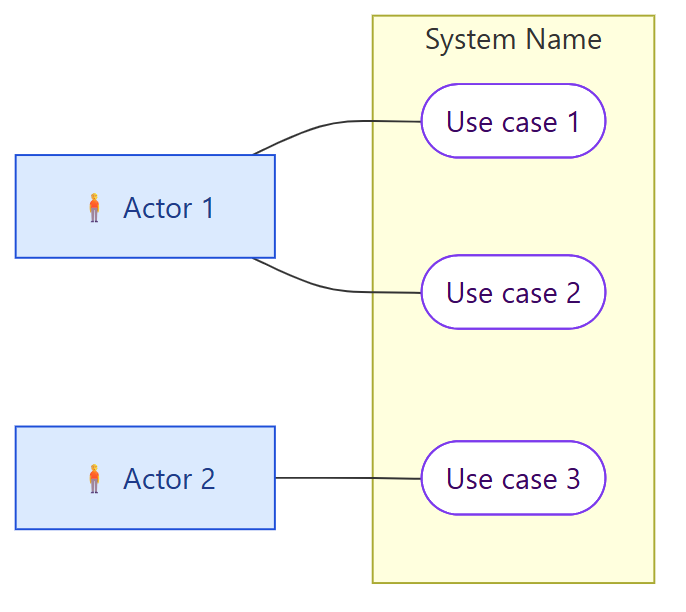
- actor อยู่นอกกล่อง
- use case อยู่ในกล่อง
- เส้นทึบ เชื่อม actor กับ use case
💡 ตั้งชื่อ use case แบบ กริยา + กรรม เสมอ เช่น "Register patient" ไม่ใช่ "Patient registration" หรือ "Registration page"
8. Use Case Relationships
ภาพรวม 4 ความสัมพันธ์
| ระดับ | ความสัมพันธ์ | อยู่ระหว่าง | ใช้ทำอะไร |
|---|---|---|---|
| High-level | Association | actor ↔ use case | แสดงว่า actor มีปฏิสัมพันธ์กับ use case |
| Detailed | Inheritance | actor ↔ actor | ย้ายพฤติกรรมร่วมของหลาย actor ไปไว้ที่ abstract actor เพื่อลดความซ้ำซ้อน |
| Detailed | Includes | use case ↔ use case | ทำ use case ใหญ่ให้เรียบง่าย โดยดึงพฤติกรรมที่ใช้ร่วมกันออกมา |
| Detailed | Extends | use case ↔ use case | เพิ่ม พฤติกรรมเสริม (optional) ให้ base use case |
🎨 วิธีอ่านรูปในสรุปนี้: 🟦 สี่เหลี่ยมสีฟ้า = actor (ในข้อสอบวาดเป็นคนก้าง) · ⬭ วงรีขอบม่วง = use case · กรอบสีเหลือง = system boundary · เส้นทึบ = association · เส้นประมีลูกศร = include / extend
8.1 Association
นิยาม: แสดง ปฏิสัมพันธ์ระหว่าง actor กับ use case วาดเป็น เส้นทึบ ไม่มีหัวลูกศร
ตัวอย่าง 1 – actor 1 คน สัมพันธ์กับหลาย use case
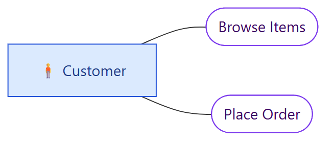
Customer actor สัมพันธ์กับ 2 use cases คือ Browse Items และ Place Order
ตัวอย่าง 2 – use case 1 อัน สัมพันธ์กับหลาย actor
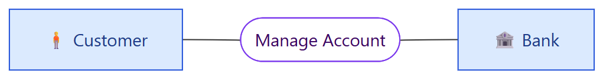
Manage Account สัมพันธ์กับทั้ง Customer และ Bank actors
💡 Actor ไม่จำเป็นต้องเป็นคน อาจเป็นระบบภายนอก เช่น Bank หรือ payment gateway
8.2 Inheritance (ระหว่าง actor)
นิยาม: ย้าย พฤติกรรมที่เหมือนกัน ของหลาย actor ไปไว้ที่ abstract actor ที่ใช้ร่วมกัน เพื่อลดความซ้ำซ้อน
Before (จากสไลด์) – ระบบห้องสมุด
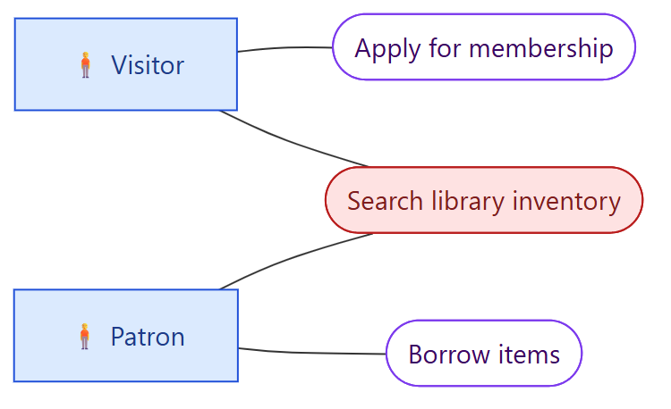
ทั้ง Visitor และ Patron ต่างมีเส้นไปที่ "Search library inventory" เหมือนกัน → ซ้ำซ้อน
After (ช่อง After ในสไลด์ว่างไว้ให้ทำในห้อง ด้านล่างเป็นแนวคำตอบ)
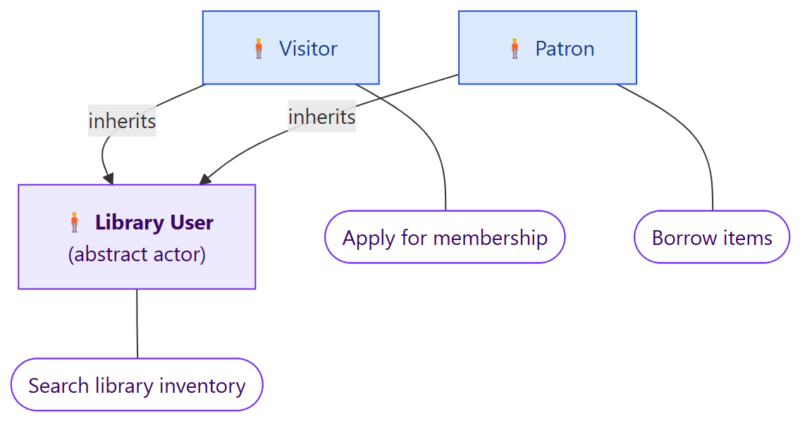
✏️ ในรูปใช้ลูกศรธรรมดาแทน ตอนวาดจริงตาม UML ให้ใช้ เส้นทึบ หัวลูกศรสามเหลี่ยมโปร่ง ชี้จาก actor ลูกไปหา actor แม่
- สร้าง abstract actor ชื่อ Library User ถือ use case ที่ใช้ร่วม คือ Search library inventory
- Visitor และ Patron สืบทอดจาก Library User จึงค้นหาได้เหมือนเดิม
- แต่ละคนยังมี use case เฉพาะตัว: Visitor → Apply for membership, Patron → Borrow items
8.3 Includes (ระหว่าง use case)
นิยาม: ทำ use case ใหญ่ให้เรียบง่าย โดย ดึงพฤติกรรมที่ใช้ร่วมกัน (common behaviours) ออกมา เป็น use case แยก
วิธีวาด ⭐
- ลูกศรเส้นประ เริ่มจาก use case ต้นฉบับ (base) ชี้ไปที่ use case ที่ถูกเรียกใช้
- ติดป้าย
<<includes>>
ตัวอย่าง 1: Checkout – แยก use case ใหญ่เป็นส่วน ๆ
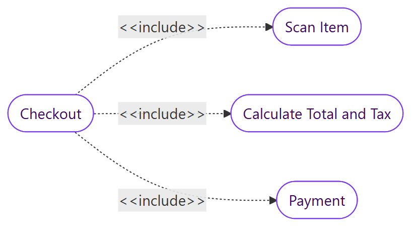
Checkout ต้องทำ Scan Item, Calculate Total and Tax และ Payment ทุกครั้ง
ตัวอย่าง 2: ATM – ดึงส่วนที่ใช้ร่วมกันออกมา
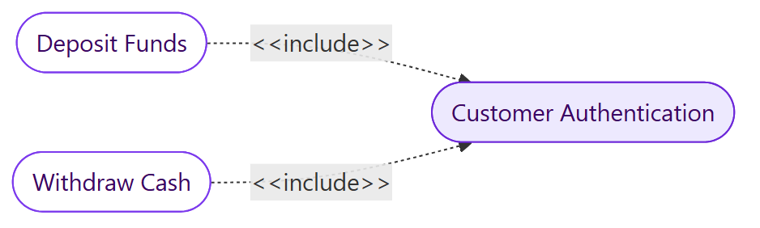
ทั้ง Deposit Funds และ Withdraw Cash ต้อง ยืนยันตัวตนลูกค้า จึงแยก Customer Authentication ออกมาใช้ร่วมกัน ไม่ต้องเขียนซ้ำ
8.4 Extends (ระหว่าง use case)
นิยาม: ให้ พฤติกรรมเสริมแบบ optional กับ base use case
วิธีวาด ⭐
- ลูกศรเส้นประ เริ่มจาก use case ที่มาเสริม (extending) ชี้ไปที่ base use case
- ติดป้าย
<<extends>>
ตัวอย่าง: Registration
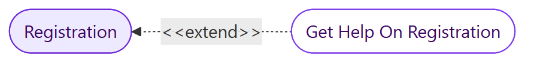
- Registration สมบูรณ์และมีความหมายได้ด้วยตัวเอง
- อาจเสริมด้วย Get Help On Registration ซึ่งเป็น ทางเลือก (บางคนกดขอความช่วยเหลือ บางคนไม่กด)
⚠️ Includes vs Extends — จุดที่สับสนที่สุดในบทนี้
| < |
< |
|
|---|---|---|
| ความหมาย | ต้องทำเสมอ เป็นส่วนหนึ่งของ base | ทำหรือไม่ทำก็ได้ (optional) |
| base use case ขาดส่วนนี้ได้ไหม | ไม่ได้ ไม่สมบูรณ์ | ได้ ยังสมบูรณ์ในตัวเอง |
| ทิศลูกศร | base ──► included | extending ──► base |
| จุดประสงค์ | ลดความซ้ำ / แยก use case ใหญ่ | เพิ่มทางเลือกหรือกรณีพิเศษ |
| ตัวอย่าง | Withdraw Cash ──► Customer Authentication | Get Help On Registration ──► Registration |
💡 เทคนิคจำทิศลูกศร: อ่านลูกศรเป็นประโยค
Withdraw Cash ──includes──► Authentication= "ถอนเงิน รวม การยืนยันตัวตน" ✅Get Help ──extends──► Registration= "ขอความช่วยเหลือ ขยาย การลงทะเบียน" ✅ทดสอบง่าย ๆ: ถามว่า "ทุกครั้งที่ทำ A ต้องทำ B ไหม?" ถ้า ต้อง ใช้ include แต่ถ้า แค่บางครั้ง ใช้ extend
9. การสร้าง Use Case (Developing a Use Case) – 6 ขั้น
| ขั้น | ทำอะไร | รายละเอียด |
|---|---|---|
| 1. Identify the system boundary | กำหนดขอบเขตระบบ | ตัดสินว่าจะโมเดลระบบอะไร แล้ววาด กล่อง แทน scope ของระบบ |
| 2. Identify the actors | หา actor | ใครจะใช้ระบบ แบ่งเป็น primary (ใช้ระบบโดยตรงเพื่อบรรลุเป้าหมาย เช่น customer) และ secondary (บทบาทสนับสนุน เช่น payment service) |
| 3. Identify use cases | หา use case | ลิสต์ งานหลักหรือเป้าหมาย ที่ actor อยากทำกับระบบ ต้องแทน functional requirements เช่น "Book Ticket", "Generate Report" |
| 4. Establish relationships | สร้างความสัมพันธ์ | เชื่อม actor กับ use case ที่ เริ่มหรือมีส่วนร่วม และพิจารณาชนิดความสัมพันธ์ (include, extend, inheritance) |
| 5. Draw a use case diagram | วาดแผนภาพ | actor อยู่นอกกล่อง, use case อยู่ในกล่อง, แสดง association และ relationship ให้ชัด |
| 6. Review and refine | ตรวจและปรับ | เช็กว่า ครอบคลุมทุก functional requirement และ validate กับ stakeholder ว่าครบและถูกต้อง |
💡 วิธีหา actor และ use case จากโจทย์ข้อความ (เทคนิคเสริม)
- คำนามที่เป็นคน ตำแหน่ง หรือระบบภายนอก → actor เช่น "ผู้เยี่ยมชม", "เจ้าหน้าที่", "ธนาคาร"
- คำกริยาที่ actor ทำกับระบบ → use case เช่น "ซื้อตั๋ว", "ยกเลิกตั๋ว", "สร้างรายงาน"
- สิ่งที่ระบบทำเองอัตโนมัติระหว่างทาง (เช่น "ระบบคำนวณราคา") มักเป็น ขั้นตอนใน narrative หรือ include ไม่ใช่ use case ที่มี actor เป็นเจ้าของ
10. Use Case Narrative
คืออะไร
- คำอธิบายเป็นข้อความอย่างละเอียด ว่าระบบโต้ตอบกับ actor อย่างไรเพื่อบรรลุเป้าหมายหนึ่ง
- อธิบาย ทีละขั้นตอน (step-by-step) ว่าผู้ใช้หรือระบบอื่นโต้ตอบกับซอฟต์แวร์อย่างไร
- มักเขียนเป็นตาราง
Key Components (8 ช่อง)
| ช่อง | ความหมาย |
|---|---|
| Use Case Name | ชื่อที่ชัดเจน ต้องตรงกับชื่อใน use case diagram |
| Primary Actor | ผู้ใช้หรือระบบที่โต้ตอบกับ use case นี้ |
| Goal in Context | เป้าหมายหรือจุดประสงค์ของ use case |
| Precondition | เงื่อนไขที่ต้องเป็นจริง ก่อน เริ่ม use case |
| Trigger | เหตุการณ์ที่ทำให้ use case เริ่ม |
| Scenario | ลำดับปฏิสัมพันธ์ปกติระหว่าง actor กับระบบ บางครั้งเรียก "main flow" หรือ "basic flow" |
| Exception | จะเกิดอะไรถ้า มีบางอย่างผิดพลาด เช่น error หรือ input ไม่ถูกต้อง |
| Postcondition | สภาพของระบบ หลัง use case เสร็จ |
⚠️ Precondition ≠ Trigger
- Precondition = สภาพ ที่ต้องเป็นจริงอยู่แล้ว เช่น "ผู้ใช้ login แล้ว"
- Trigger = เหตุการณ์ ที่เริ่ม use case เช่น "ผู้ใช้กดปุ่มซื้อตั๋ว"
ตัวอย่าง Use Case Narrative (ผมเขียนเอง จากโจทย์ Zoo Ticketing)
| Field | Content |
|---|---|
| Use Case Name | Purchase Ticket Online |
| Primary Actor | Visitor (ผู้เยี่ยมชม) |
| Goal in Context | ผู้เยี่ยมชมซื้อตั๋วเข้าสวนสัตว์ล่วงหน้า และได้ตั๋วพร้อม Booking ID กับ QR Code |
| Precondition | ผู้ดูแลระบบกำหนดราคาและรอบการเข้าชมไว้แล้ว; ผู้เยี่ยมชมเข้าสู่ระบบแล้ว |
| Trigger | ผู้เยี่ยมชมกดเมนู "ซื้อตั๋ว" |
| Scenario | 1. ผู้เยี่ยมชมเลือกวันที่เข้าชม 2. ผู้เยี่ยมชมเลือกประเภทบัตร (เด็ก/ผู้ใหญ่/ผู้สูงอายุ) และจำนวน 3. ระบบแสดงราคารวมตามที่ผู้ดูแลระบบกำหนด 4. ผู้เยี่ยมชมเลือกชำระด้วยบัตรเครดิตหรือ QR Code 5. ระบบยืนยันการชำระเงิน 6. ระบบออกตั๋วพร้อม Booking ID และ QR Code |
| Exception | 1a. วันที่เลือกเต็มหรือปิดทำการ: ระบบแจ้งและให้เลือกวันใหม่ 5a. ชำระเงินไม่สำเร็จ: ระบบแจ้งและให้ลองใหม่หรือเปลี่ยนช่องทาง |
| Postcondition | บันทึกการจองในระบบ; ผู้เยี่ยมชมได้ตั๋วพร้อม Booking ID และ QR Code |
11. แนวทางทำแบบฝึกหัด
ทุกคำตอบในหัวข้อนี้ผมเขียนเป็น แนวทาง ไม่ใช่เฉลยของอาจารย์ ควรเช็กกับที่อาจารย์สอนในห้องอีกครั้ง
11.1 In-class Exercise: Zoo Ticketing System
โจทย์ (ย่อ): ระบบขายบัตรเข้าสวนสัตว์ ซื้อล่วงหน้าผ่านระบบ หรือซื้อที่จุดขายหน้าสวนสัตว์ก็ได้
- ผู้เยี่ยมชม: ซื้อตั๋ว (เลือกประเภทบัตร เด็ก/ผู้ใหญ่/ผู้สูงอายุ และวันที่) → ระบบแสดงราคา → ชำระด้วยบัตรเครดิตหรือ QR Code → ได้ตั๋วพร้อม Booking ID และ QR Code, ตรวจรายละเอียดและสถานะตั๋ว, ขอยกเลิกตั๋วก่อนวันเข้าชม (ระบบตรวจเงื่อนไขและคืนเงินตามนโยบาย)
- เจ้าหน้าที่ขายตั๋ว: ขายตั๋ว ณ จุดบริการ (เลือกประเภท จำนวน วันที่ รับเงิน ออกตั๋ว), ตรวจสอบ แก้ไข หรือยกเลิกรายการตามคำขอ (คืนเงินตามนโยบาย)
- ผู้ดูแลระบบ: กำหนดรอบและช่วงเวลาเข้าชม, กำหนดและปรับราคาบัตรตามช่วงเวลา ฤดูกาล หรือกิจกรรมพิเศษ, จัดการบัญชีและสิทธิ์เจ้าหน้าที่, ดูและสร้างรายงานยอดขายและสถิติผู้เข้าชม
งานที่ต้องทำ: (1) อ่านระบบ (2) วาด use case diagram (3) เขียน use case narrative 2 อัน
แนวทาง use case diagram System boundary: Zoo Ticketing System
Actors และ use cases (association)
| Actor | Use cases |
|---|---|
| 🧍 Visitor (primary) | Purchase Ticket Online, View Ticket Status, Request Ticket Cancellation |
| 🧍 Ticket Staff (primary) | Sell Ticket at Counter, Manage Ticket Order (ตรวจสอบ/แก้ไข/ยกเลิก) |
| 🧍 Administrator (primary) | Manage Visit Rounds, Manage Ticket Prices, Manage Staff Accounts, Generate Sales Report |
| 🏦 Payment Gateway (secondary) | Make Payment, Process Refund |
ความสัมพันธ์ระหว่าง use case
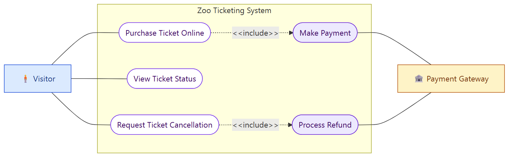
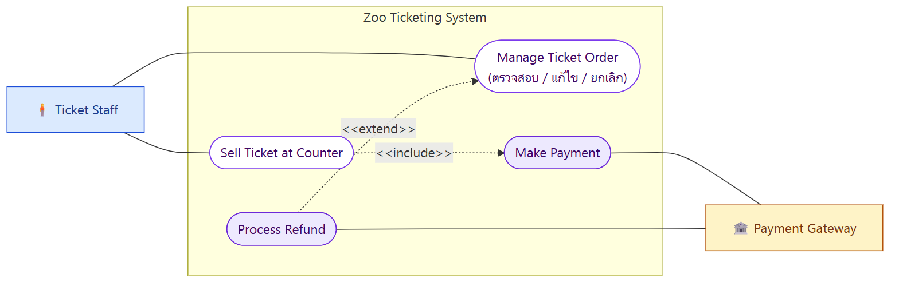
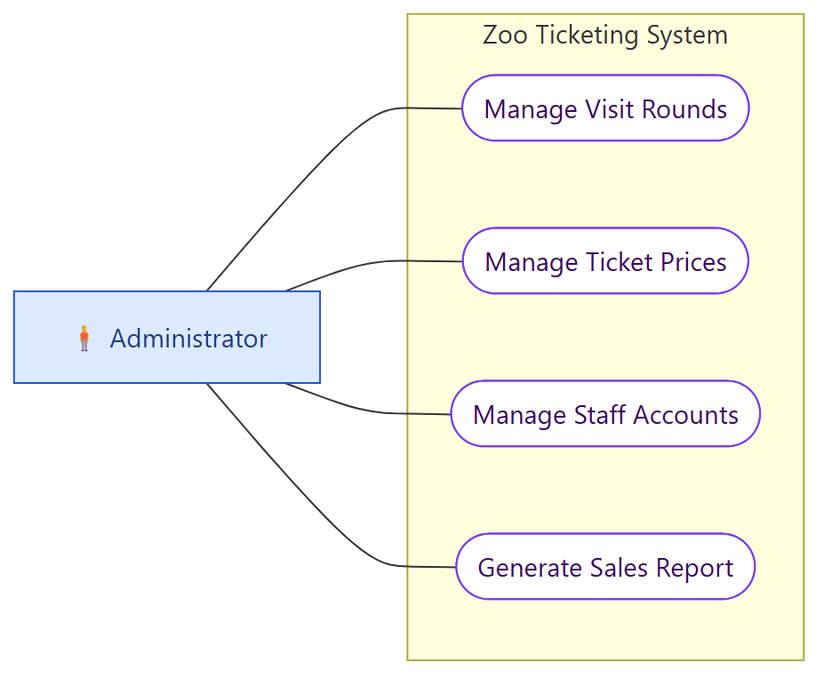
เหตุผลของการออกแบบ
- Make Payment ถูก include จากทั้งการซื้อออนไลน์และการขายหน้าเคาน์เตอร์ เพราะ ต้องจ่ายเงินทุกครั้ง และใช้ร่วมกัน
- Process Refund ถูก include จาก Request Ticket Cancellation เพราะคำขอยกเลิกทุกครั้งต้องผ่านการตรวจเงื่อนไขคืนเงิน (ถ้ามองว่าคืนเงินแค่บางกรณี ใช้ extend ก็ได้ ขึ้นกับการตีความ) แต่กับ Manage Ticket Order ใช้ extend เพราะเจ้าหน้าที่แค่ตรวจหรือแก้ไขตั๋วโดยไม่คืนเงินก็ได้ จะคืนเงินเฉพาะตอนยกเลิก
- Payment Gateway เป็น secondary actor (ระบบภายนอก)
- "ระบบแสดงราคา" เป็นแค่ ขั้นตอนใน scenario ไม่ใช่ use case แยก
- Staff ตรวจสอบ แก้ไข และยกเลิกตั๋ว รวมเป็น "Manage Ticket Order" หรือจะแยกเป็น 3 use case ก็ได้
11.2 Exercise 2: Requirements Analysis with Scenario-based Modeling
งานที่ต้องทำ: จากระบบที่กำหนด ให้
- ระบุ Functional Requirement
- ระบุ Non-functional Requirement
- ระบุ Actor และ Use Case
- วาด Detailed-level Use Case Diagram (มี include/extend/inheritance)
- เขียน Use Case Narrative
ส่งเป็น PDF ชื่อ Ex2-SecX-idXXXXXXX.pdf บน MyCourses
ระบบที่ 1: การจัดการนัดหมายคลินิกทันตกรรม
สรุปโจทย์
- ผู้ป่วย: สร้างบัญชีและเข้าสู่ระบบ, จองนัด (เลือกทันตแพทย์ เลือกวันเวลาจากช่วงว่าง ระบุเหตุผล เช่น ตรวจฟัน ถอนฟัน ขูดหินปูน) → ระบบสร้างรหัสนัดหมาย และส่งยืนยันทาง push notification, ตรวจนัดที่จะมาถึง, เปลี่ยนหรือยกเลิกนัด, ดูประวัตินัด
- ทันตแพทย์: เข้าสู่ระบบ, ดูตารางงานประจำวันพร้อมรายละเอียดผู้ป่วยและเหตุผล, อัปเดตสถานะนัด (รอดำเนินการ/เสร็จสิ้น/ยกเลิก), เพิ่มบันทึกการมาพบ, เปลี่ยนแปลงนัดหมาย
- เจ้าหน้าที่คลินิก: จัดการข้อมูลผู้ป่วย, อัปเดตความพร้อมของนัดหมาย, เปลี่ยนหรือยกเลิกนัดแทนผู้ป่วย, สร้างรายงานสถิติ (นัดที่เสร็จสิ้น, ขาดนัด)
- ระบบ: ส่งแจ้งเตือนอัตโนมัติทาง push notification และ SMS ก่อนถึงนัด
- ผู้ดูแลระบบ: จัดการบัญชีผู้ใช้, อัปเดตตารางงานคลินิก, ตั้งค่านัดหมาย (จำนวนนัดสูงสุดต่อวันของแต่ละทันตแพทย์, วันหยุด)
แนวทาง Functional Requirements (ตัวอย่าง)
- FR1: The system shall allow patients to create an account and log in.
- FR2: The system shall allow patients to book an appointment by selecting a dentist, an available date/time, and a visit reason.
- FR3: The system shall generate an appointment ID and send a push notification confirmation.
- FR4: The system shall allow patients to view, reschedule, and cancel appointments and view appointment history.
- FR5: The system shall allow dentists to view their daily schedule, update appointment status, and add visit notes.
- FR6: The system shall allow clinic staff to manage patient information and reschedule/cancel on behalf of patients.
- FR7: The system shall generate appointment statistics reports (completed and no-show).
- FR8: The system shall send automatic reminders via push notification and SMS before the appointment.
- FR9: The system shall allow administrators to manage user accounts, clinic schedules, and appointment settings.
แนวทาง Non-functional Requirements (โจทย์ไม่ได้เขียนตรง ๆ ต้องอนุมานเอง และต้องวัดผลได้)
- NFR1 (usability): โจทย์บอกว่าแอป "ใช้งานง่าย" จึงควรเขียนให้วัดได้ เช่น a new patient shall complete a booking within 3 minutes
- NFR2 (reliability): reminders shall be sent at least 24 hours before the appointment for 99% of appointments
- NFR3 (security): patient records shall be accessible only to authorized dentists and staff
- NFR4 (performance): available time slots shall load within 2 seconds
- NFR5 (platform): the application shall run on iOS and Android
แนวทาง Actors
- Primary: Patient, Dentist, Clinic Staff, Administrator
- Secondary: Push Notification Service, SMS Gateway
- Inheritance ที่ใช้ได้: Dentist และ Clinic Staff ต่างเปลี่ยนแปลงนัดหมายได้ อาจสร้าง abstract actor "Clinic Personnel" ถือ use case "Reschedule Appointment" แล้วให้ทั้งคู่สืบทอด
- Include ที่ใช้ได้: Book Appointment ──<
>──► Send Confirmation Notification - Extend ที่ใช้ได้: Cancel Appointment ◄──<
>── Record No-show (ตัวอย่างการตีความ) - Login: ถ้าวาด "Log In" เป็น use case แยก ให้ระวังว่าหลายตำราไม่นิยม include login กับทุก use case แต่ให้เขียนเป็น precondition แทน (ขึ้นกับที่อาจารย์สอน)
ระบบที่ 2: ระบบ POS ร้าน Twinkle Jingle's Christmas Shop
สรุปโจทย์
- ร้านขายของคริสต์มาสที่เปิดเฉพาะเดือนธันวาคม (ช็อกโกแลต แก้วธีมสโนว์แมน ของประดับต้นคริสต์มาส เทียน ถุงเท้า หมวกซานตา)
- พนักงานขาย: ดูรายการสินค้าและจำนวนในสต็อก, ขายสินค้า (เพิ่มหรือลบสินค้าในรายการขาย, ใช้ส่วนลด), ระบบคำนวณยอดรวมส่วนลดและภาษี, รับชำระด้วยเงินสด บัตรเครดิต หรือ e-wallet, ระบบออกใบเสร็จและตัดสต็อกอัตโนมัติ, ระบบแจ้งเตือนเมื่อสินค้าหมด เพื่อป้องกันการขายของที่ไม่มี
- ผู้จัดการร้าน: จัดการข้อมูลสินค้า (เพิ่ม แก้ไข นำออก), กำหนดและปรับส่วนลดสำหรับสินค้าหรือช่วงเวลา, ตรวจสินค้าคงคลัง, ดูรายงานการขายบนแดชบอร์ด
- ระบบ: จบวันทำรายงานยอดขายประจำวันอัตโนมัติ (รายได้รวม จำนวนธุรกรรม จำนวนที่ขายได้ต่อประเภท และสินค้าขายดี)
แนวทางโครง use case diagram
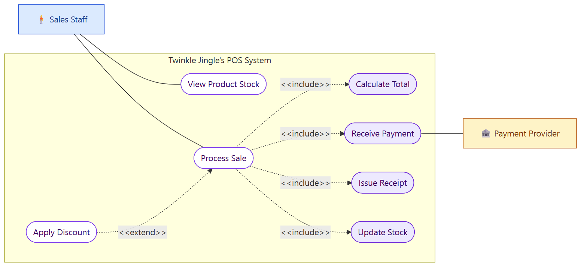
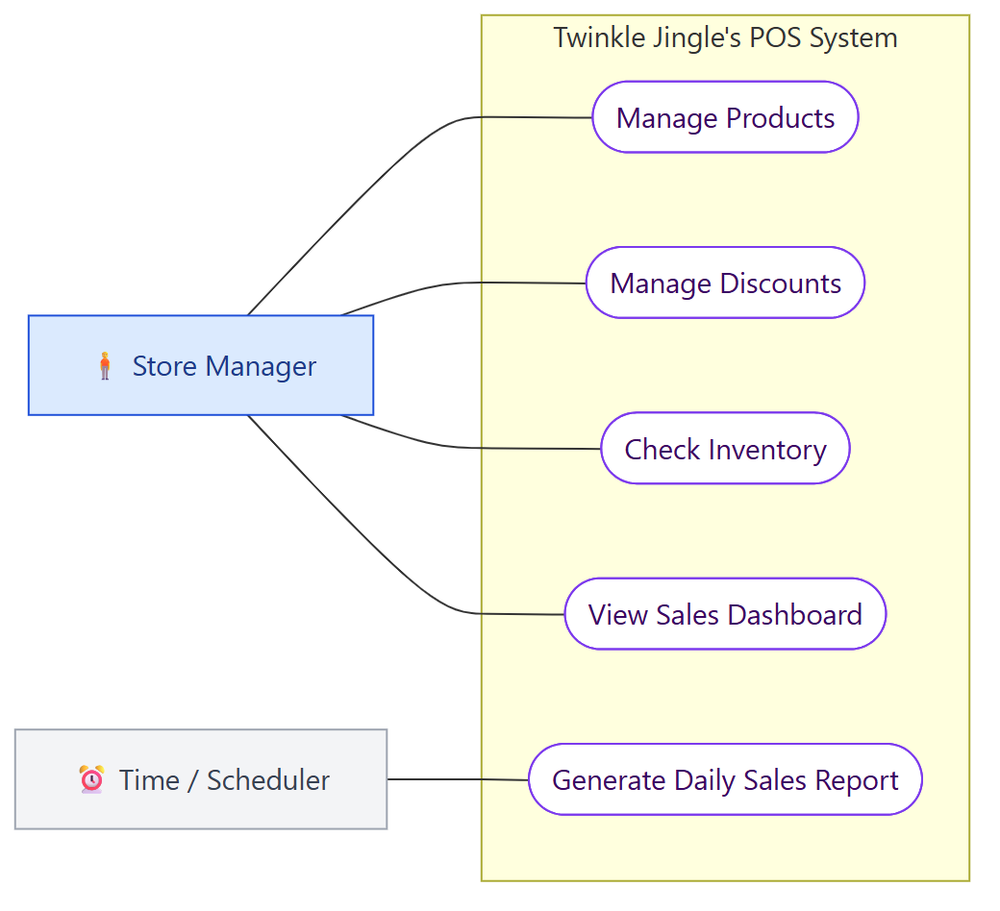
- Apply Discount เป็น extend เพราะไม่ได้ใช้ส่วนลดทุกการขาย
- Calculate Total, Receive Payment, Issue Receipt, Update Stock เป็น include เพราะเกิดทุกการขาย (จะรวมเป็นขั้นตอนใน narrative แทนก็ได้ ถ้าไม่อยากให้แผนภาพละเอียดเกิน)
- การแจ้งเตือนสินค้าหมด อาจเขียนเป็น exception ใน narrative ของ Process Sale หรือจะเป็น extend "Alert Out of Stock" ก็ได้
- รายงานประจำวัน เกิดอัตโนมัติ บางตำรานิยมใช้ Time เป็น actor ส่วนบางตำราให้ Store Manager เป็น actor ที่รับรายงาน (ขึ้นกับที่อาจารย์สอน)
- Non-functional ที่อนุมานได้: คำนวณภาษีถูกต้อง 100%, ใช้งานช่วงเทศกาลคนเยอะได้ (เช่น ทำรายการขายเสร็จภายใน 30 วินาที), ข้อมูลบัตรเครดิตปลอดภัย
คำศัพท์สำคัญ
| คำศัพท์ | ความหมาย | จำง่าย ๆ ว่า |
|---|---|---|
| Requirements analysis | ขยาย requirement และสร้างโมเดลเพื่อวางฐานการออกแบบ มักทำโดย BA | แปลงข้อความเป็นโมเดล |
| Analysis model | สะพานระหว่าง requirements specification กับ design model | สะพาน |
| Scenario-based model | โมเดลที่มองจากมุม actor เช่น use case | ใครทำอะไร |
| Class / Flow / Behavioral / Data model | โมเดล class OO / การไหลของข้อมูล / การตอบสนองต่อ event / information domain (ERD) | ของ / ไหล / เหตุการณ์ / ข้อมูล |
| Use case | ลำดับขั้นตอนเพื่อทำ business task หนึ่งอย่างให้สำเร็จ จากมุมมองผู้ใช้ภายนอก | 1 งาน 1 วงรี |
| Use case diagram | แผนภาพแสดงว่าใครใช้ระบบ และใช้อย่างไร | ภาพรวมใคร-ทำอะไร |
| Use case narrative | คำอธิบายละเอียดเป็นตารางของ use case หนึ่งอัน | คำบรรยาย |
| Actor | คนหรือระบบภายนอกที่ใช้ระบบ อยู่ นอก system boundary | คนก้าง |
| Primary actor | ใช้ระบบโดยตรงเพื่อบรรลุเป้าหมาย | ผู้ใช้หลัก |
| Secondary actor | บทบาทสนับสนุน เช่น payment service | ผู้ช่วย |
| System boundary | กล่องแสดงขอบเขตระบบ ใส่ชื่อระบบ | กรอบระบบ |
| Association | เส้นทึบ actor ↔ use case | เส้นเชื่อม |
| Inheritance | actor ลูกสืบทอดพฤติกรรมจาก abstract actor เพื่อลดความซ้ำ | พ่อ-ลูก |
| Abstract actor | actor กลางที่รวมพฤติกรรมร่วมของหลาย actor | actor แม่ |
| < |
ดึงพฤติกรรมร่วมหรือแยก use case ใหญ่ ทำเสมอ ลูกศรจาก base → included | ต้องทำ |
| < |
พฤติกรรมเสริม optional ลูกศรจาก extending → base | ทำก็ได้ไม่ทำก็ได้ |
| Base use case | use case หลักที่ถูก include/extend | ตัวหลัก |
| Goal in Context | เป้าหมายของ use case | ทำเพื่ออะไร |
| Precondition | สภาพที่ต้องเป็นจริงก่อนเริ่ม | สภาพก่อน |
| Trigger | เหตุการณ์ที่เริ่ม use case | ปุ่มสตาร์ท |
| Scenario (main / basic flow) | ลำดับปฏิสัมพันธ์ปกติ | ทางหลัก |
| Exception | สิ่งที่เกิดเมื่อผิดพลาด หรือ input ไม่ถูกต้อง | ทางเบี่ยง |
| Postcondition | สภาพระบบหลังจบ use case | สภาพหลัง |
สรุปท้ายบท / จุดที่มักออกสอบ
เรื่องที่ต้องจำ
- Analysis model = สะพาน ระหว่าง requirements specification กับ design model
- Requirements analysis มักทำโดย BA มี 3 objectives: อธิบายว่าลูกค้าต้องการอะไร, วางฐานการออกแบบ, สร้าง requirement ที่ validate ได้
- 5 modeling approaches: scenario-based, class, flow, behavioral, data
- Jacobson: actors = สิ่งที่อยู่ นอก ระบบ, use cases = สิ่งที่ระบบ ทำ
- สัญลักษณ์: ellipse (ชื่อขึ้นต้นด้วย verb), stickman, box (ชื่อระบบ)
- 4 relationships: association (high-level), inheritance (actor–actor), includes และ extends (use case–use case)
- ทิศลูกศร: include = base → included, extend = extending → base (เส้นประทั้งคู่)
- 6 ขั้นสร้าง use case: boundary → actors → use cases → relationships → draw → review & refine
- Narrative 8 ช่อง: Name, Primary Actor, Goal in Context, Precondition, Trigger, Scenario, Exception, Postcondition
- ชื่อใน narrative ต้องตรงกับชื่อใน diagram
คู่ที่มักสับสน
| คู่ | ต่างกันที่ |
|---|---|
| Include vs Extend | ทำเสมอ, base → included vs optional, extending → base |
| Association vs Include | เส้นทึบ actor–use case vs เส้นประ use case–use case |
| Inheritance vs Include | ระหว่าง actor vs ระหว่าง use case |
| Primary vs Secondary actor | ใช้ระบบเพื่อเป้าหมายตัวเอง vs สนับสนุน เช่น payment service |
| Precondition vs Trigger | สภาพที่เป็นจริงอยู่แล้ว vs เหตุการณ์ที่เริ่ม |
| Scenario vs Exception | ทางปกติ vs ทางเมื่อผิดพลาด |
| Use case diagram vs Narrative | ภาพรวมทุก use case vs รายละเอียดทีละ use case |
แนวคิดที่ต้องอธิบายได้
- ทำไมต้องมี analysis model ก่อน design เพราะเป็นสะพานที่ทำให้ requirement ข้อความกลายเป็นโครงสร้างชัดเจน ที่ทั้ง stakeholder validate ได้และนักออกแบบใช้ต่อได้
- ทำไม scenario-based model ดีต่อการ validate กับ stakeholder เพราะมองจากมุมของผู้ใช้และใช้คำที่ผู้ใช้เข้าใจ
- ทำไมใช้ inheritance เพื่อลดเส้นซ้ำซ้อนเมื่อหลาย actor ทำ use case เดียวกัน
- ทำไมใช้ include เพื่อไม่ต้องเขียนพฤติกรรมที่ใช้ร่วมกันซ้ำ (เช่น authentication) และทำ use case ใหญ่ให้อ่านง่าย
- โจทย์วาด diagram: หา actor จากคำนามที่เป็นคนหรือระบบภายนอก, หา use case จากกริยาที่ actor ทำ, ตัดสิน include/extend ด้วยคำถาม "ต้องทำทุกครั้งไหม?"